概要
会議や作業中の画面を、決まった範囲でワンクリック撮影し、見出し・メモと一緒に記録できるツールです。
こんなことありませんか？
- キャプチャのたびに位置がずれる、プチストレス
- 「Shift+Win+S」→「Ctrl+V」を会議中に何度繰り返したことか
- 撮影したいウィンドウに他のウィンドウが重なってしまう
- 議題ごとに整理しながら記録したいのに、あとで並べ替えるのが大変
- OneNoteにメモするけど、PDF化しにくく、ページ単位や人との共有もしづらい
記録はブラウザ内(IndexedDB)にだけ保存され、サーバーへは送信されません。 記録は画像込みの1つのHTMLファイルとして書き出せるので、共有・印刷・PDF化もそのまま行えます。書き出したHTMLを読み込んで続きから編集することもできます。
画面構成
| 場所 | 内容 |
|---|---|
| 🖥 範囲 | 画面共有を開始し、キャプチャする範囲を決めます(使い始めるたびに行う準備) |
| 📝 記録 | キャプチャ・見出し・メモを記録するメインの画面です |
| 🕘 履歴 | これまでにHTML保存したファイルの一覧です。期間で絞り込み・検索・ファイルを開く・読み込みができます |
| 右上のチップ | 画面共有の状態(未共有/範囲未固定/範囲のサイズ)を表示します。クリックで範囲タブへ移ります |
| ⚙ 設定 | 保存先フォルダ・ライト/ダーク切替・ヘルプ |
| ?(⚙の右) | このヘルプを別タブで開きます |
| タイトル下の番号 | バージョンです。前回見たときから更新されていると「NEW」が付きます(クリックで消えます) |
画面の幅に合わせて表示が切り替わります。ブラウザのサイドパネルなどで幅を狭くして使う場合は、ボタンがアイコンだけの表示になり、目次は見出し選択欄にまとまります。
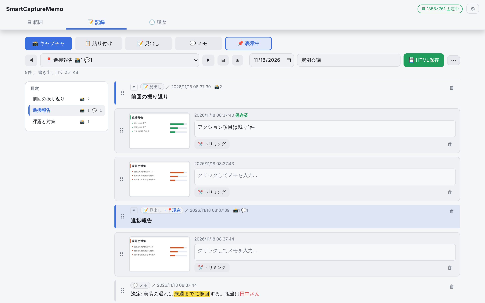
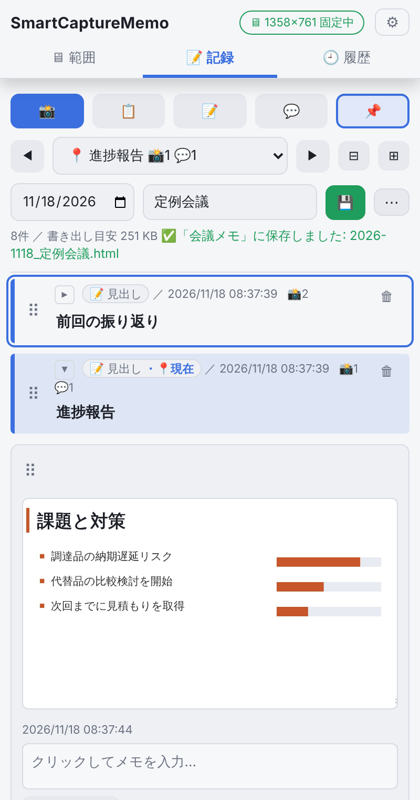
範囲タブ
画面共有と範囲固定
- 画面共有を開始をクリックすると、ブラウザの共有ダイアログが開きます。タブ・ウィンドウ・画面全体のいずれかを選び「共有」を押します(他アプリの画面を撮りたい場合は「ウィンドウ」または「画面全体」)。
- 映像をドラッグして撮影したい範囲を指定し範囲固定を押します。範囲を選ばず🖥 全画面を押せば、共有した映像をそのまま使えます。
- 縦横比を揃えたい場合は、固定前に比率(フリー/16:9/9:16/4:3/3:4/1:1/3:2)を選んでおきます。
- 範囲内をドラッグで位置移動、四隅の丸で拡大縮小、辺の丸で幅または高さだけ変更できます。矢印キーでも位置を微調整できます(Shiftで大きく移動)。
範囲を固定すると自動で記録タブへ移り、対応ブラウザでは常時表示ウィンドウも開きます。範囲を変えたいときは範囲タブ(または右上のチップ)から戻って固定し直してください。他のタブを表示している間も共有の映像は更新され続けます。
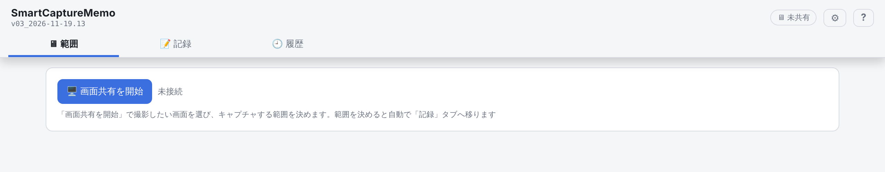
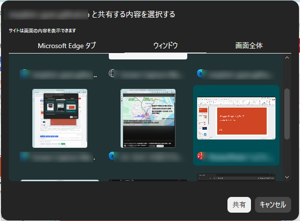
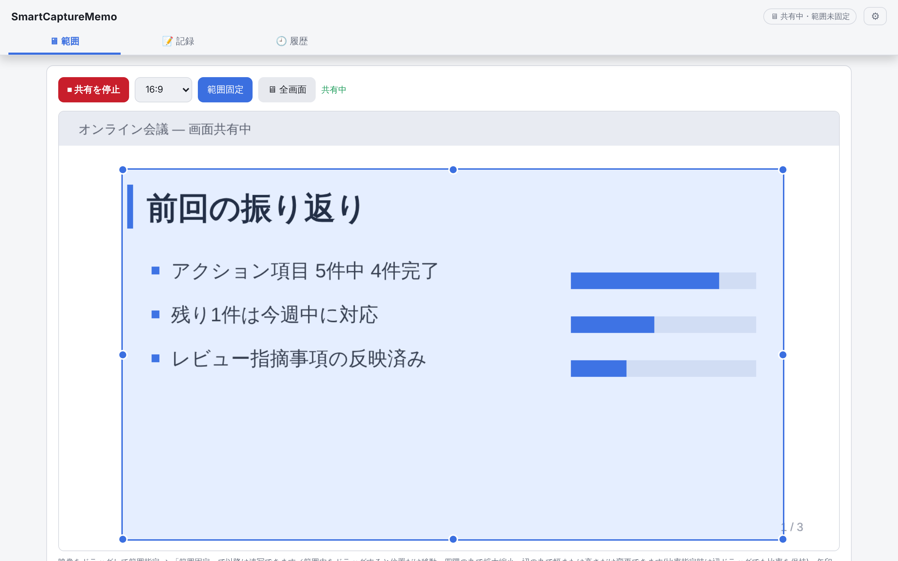
記録タブ
キャプチャ
- 📸キャプチャボタン、または Space キー(入力欄の操作中を除く) — 固定した範囲を撮影します
- 📋貼り付けボタン、または Ctrl+V — 他で撮ったスクリーンショット等の画像を追加します(画面共有していなくても使えます)
- 📝見出し / 💬メモ — 画像の無い行を追加します(見出しの活用参照)
追加される位置は次の順で決まります。
- 一覧の行を選択している(枠線表示)場合: その行の直後
- 行を選択していない場合: 現在の見出しのセクションの末尾
- 現在の見出しを指定していない場合: 一覧の末尾
キーボードだけでメモを続ける
- メモを入力し、Ctrl+Enter(または Esc)で入力を終える(その行が選択された状態になります)
- Space でキャプチャ(選択中の行の直後に入り、新しい行が選択されます)
- Enter で新しい行のメモを入力し始める
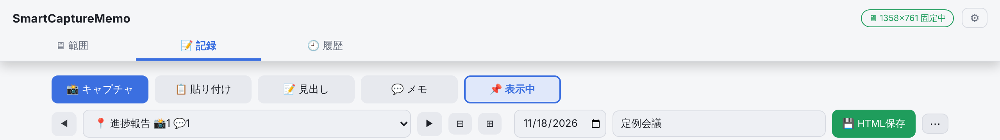
見出しの活用
見出しから次の見出しまでを1つのセクションとして扱います。会議の議題を先に見出しとして登録しておき、議題を切り替えながら撮影する使い方を想定しています。
議題をまとめて登録する
- Enterで次の見出し: 見出しの入力中に Enter を押すと、すぐ下に新しい見出しができて入力が続けられます。何も書かずに Enter で終了します(Shift+Enter は改行)。
- 複数行の貼り付け: 会議案内の議題など、複数行のテキストを見出しに貼り付けると、1行ずつ別々の見出しに分かれます。
現在の見出し
- 行を選択していないときのキャプチャ・メモは、📍現在の見出しのセクション末尾に追加されます。最初に登録した見出しが自動で現在の見出しになります。
- 切り替えは、見出し選択欄・◀ ▶ボタン・目次のクリック・Alt+↑/↓ で行えます。現在の見出しは一覧で色付き表示され「📍現在」と表示されます。
- ◀ ▶ は端まで行くと反対側へ循環します(最後の見出しの次は最初の見出し)。
- 見出しを「指定しない」にすると、従来どおり一覧の末尾に追加されます。
目次と折りたたみ
- 画面が広いときは、記録タブの左側に目次が表示されます(各セクションの📸画像・💬メモの件数付き)。クリックでその見出しへ移動し、現在の見出しにもなります。
- 見出し行の ▾/▸ でセクションを折りたためます。折りたたみ中も件数が表示されます。⊟ですべて折りたたみ、⊞ですべて開きます。折りたたんだセクションに追加すると自動で開きます。
- 見出し/メモの種別バッジ(📝見出し / 💬メモ)をクリックすると種別を切り替えられます。メモはセクションの区切りになりません。
- 見出しが1つも無いときは目次欄を出さず、一覧を横いっぱいに表示します。
- 目次と一覧の間の境目をドラッグすると目次の幅を、各キャプチャの画像とメモの間の境目をドラッグすると全キャプチャ共通で画像の幅(最大は行の半分)を変えられます。境目をダブルクリックすると標準の幅に戻ります。幅は全削除しても保持されます。
常時表示ウィンドウ
範囲固定と同時に、対応ブラウザでは最前面の小窓(Document Picture-in-Picture)が開きます。📌ボタンで開閉できます(開いている間はボタンが「表示中」になります)。
- 他のアプリを操作中でも、小窓の📸キャプチャ(または小窓で Space)で撮影できます。
- 小窓には現在の見出し(撮影した画像の追加先)が表示され、◀ ▶で議題を切り替えられます。
- 小窓から撮影した画像は、一覧の行選択に関係なく常に現在の見出しへ追加されます。
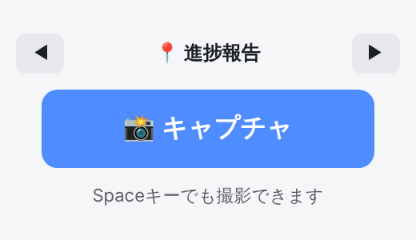
メモの装飾
メモ欄は、ふだんは装飾を反映したプレビュー表示です。クリックすると編集状態になり、下に装飾ツールバーが表示されます(選択範囲に適用。もう一度押すと外れます)。Esc または他の場所をクリックすると保存してプレビューに戻ります。
| 記法 | 結果 | |
|---|---|---|
| B | **太字** | 太字 |
| S | ~~取り消し線~~ | |
| U | __下線__ | 下線 |
| 🖍 | ==マーカー== | マーカー |
[文字]{red} | 文字(red/blue/green。黒は色を外して標準色に戻す) | |
| 🔗 | [文字](URL) | 任意の文字へのリンク(裸のURLは自動でリンク化) |
リンク付きの文字をコピーして貼り付けると、自動で [表示文字](URL) に変換されます。
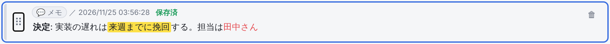
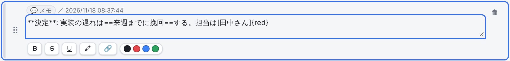
保存とその他の操作
- 日付・資料タイトル: 書き出すHTMLのタイトルとファイル名(
日付_資料タイトル.html)に使われます。前回の値は保持されます。 - 💾 HTML保存: 記録一覧を画像込みの1つのHTMLファイルとして書き出します。保存先フォルダを登録していればそのフォルダへ直接保存し(同名ファイルがあれば上書き確認)、未登録なら通常のダウンロードになります。保存すると書き出し履歴に記録されます。
- ⋯ メニュー
- 📥 HTMLを読み込む: 書き出したHTMLファイルを記録一覧の末尾に読み込み、続きから編集できます(タイトル・日付も復元)
- 🔄 一覧を更新: 別のタブ/ウィンドウで追加した記録を反映します(画面共有・範囲固定はそのまま)
- 🗑 全削除: 記録をすべて削除します(確認あり)。タイトル・日付もリセットされます
トリミング
- 画像の✂️トリミングで範囲をドラッグして「この範囲でトリミング」で確定します。元画像は保持されるので、何度でも選び直せます。「元に戻す」でトリミング前に戻ります。
- 一度トリミングすると、他の画像の行に🔁前回の範囲ボタンが現れ、同じ比率の範囲をその場で適用できます。
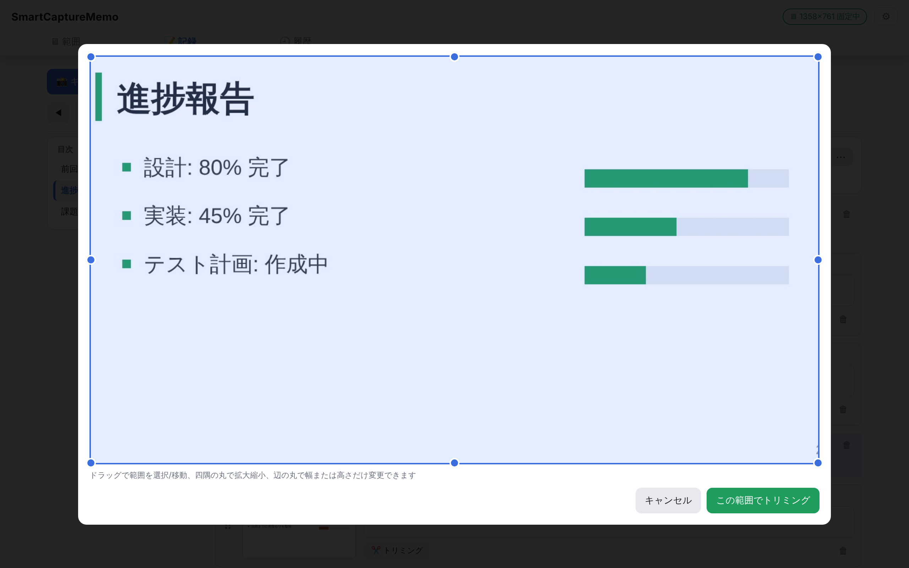
並び替え
- 行の左端の
⠿をドラッグ&ドロップで並び替えできます。 ⠿にフォーカスして Shift+Alt+↑/↓ でも並び替えできます(折りたたみ中の行は飛ばします)。- 見出し行を動かすとセクションの区切りが動きます(中身の行は一緒には動きません)。
履歴タブ
書き出し履歴
HTML保存した日時・ファイル名・件数の一覧です。新しい順に表示され、同じファイル名で何度も保存したものは「同名N件」にまとめて折りたたまれます。
- 期間: 今日/今週/先週/今月/すべて で絞り込みます(週は月曜始まり)。
- 検索: ファイル名の一部で絞り込みます。
- 📄 開く: 保存先フォルダ内のファイルを新しいタブで開きます。
- 📥 読み込む: そのファイルを記録一覧の末尾に読み込み、記録タブへ移ります。
- 📋 パスをコピー: ⚙設定で「フォルダのパス」を入力しておくと表示されます。エクスプローラーのアドレス欄に貼り付けて Enter で、保存先フォルダを開けます(ブラウザからはフォルダを直接開けないため)。
- 📂 フォルダから追加: 保存先フォルダにあるHTMLのうち、履歴に無いもの(旧ツールや別の方法で保存したファイルなど)を履歴に追加します。日時はファイルの保存日時、タイトル・件数はファイルの中身から読み取ります。このツール(旧Screen Capture Memoを含む)で書き出したHTML以外は対象外です。
- 🔄 同期: 保存先フォルダの履歴ファイル(
smart-capture-memo-history.json)から他の端末で保存した分を取り込み、ファイルが消えていないかを確認します。見つからないファイルは取り消し線で表示されます。
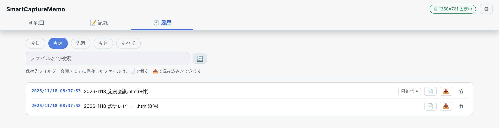
設定・書き出しHTML
設定
- 保存先フォルダ: 「📁 フォルダを選ぶ」で登録すると、HTML保存がそのフォルダへの直接保存になり、履歴からファイルを開く・読み込むことができます。OneDrive等の同期フォルダにすると、他の端末とも書き出し履歴を共有できます。
- 保存・同期のときに、ブラウザが「このフォルダへのアクセスを許可しますか」と確認することがあります。「毎回許可する」を選ぶと、以降は確認が出なくなります。
- フォルダのパス(任意): エクスプローラーのアドレス欄からコピーした保存先フォルダのパスを貼り付けておくと、履歴タブの「📋 パスをコピー」で呼び出せます。端末ごとに保存されます。
- 表示: ライト/ダークを切り替えます。
- ヘルプ: このページを表示します。
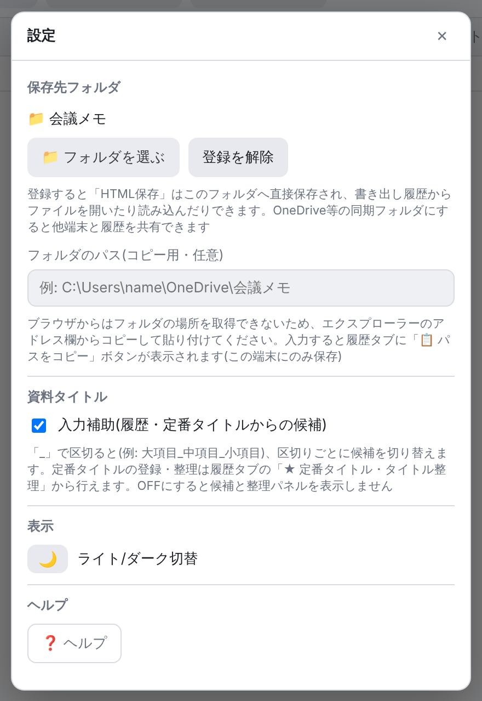
書き出しHTMLの表示
書き出したHTMLはツール本体と同じデザインで、画面上部のタブで表示を切り替えられます。右上の🌙でライト/ダーク切替、「🖨 印刷/PDF」でPDF化できます。
| モード | 内容 |
|---|---|
| 📝 一覧 | 縦スクロールの一覧。見出しから作った目次(📸画像・💬メモの件数付き)が左側に表示されます。画面が狭いときは右端からスワイプ/ホバーで引き出せます |
| ▦ PDF: N枚/ページ | 印刷・PDF化向けのグリッド(2・3・4・6枚/ページ)。「コメント表示」でメモの表示を切り替えられます |
| ▤ PDF: ノート | 画像を左、メモを右に並べたレイアウト |
画像をクリックすると(ツール本体・書き出しHTMLとも)スライドショーのように拡大表示します。コメント表示がONのときは、コメントの有無に関わらずコメント欄の高さを確保して画像の大きさを揃え、長いコメントは欄の中でスクロールできます。画像は小さいものも画面に収まる最大サイズで表示され、ホイールで拡大縮小、ドラッグで移動、左右キーで前後の画像に切り替えられます。右上の「💬 コメント」(または C キー)でメモのキャプション表示をON/OFFでき、設定はブラウザに記憶されます。
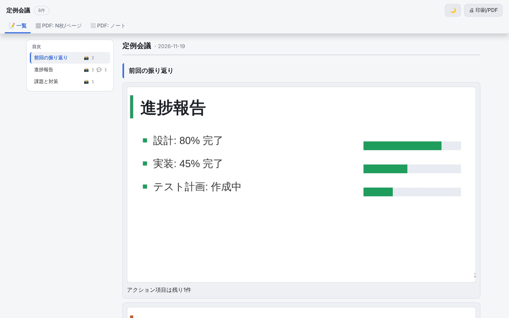
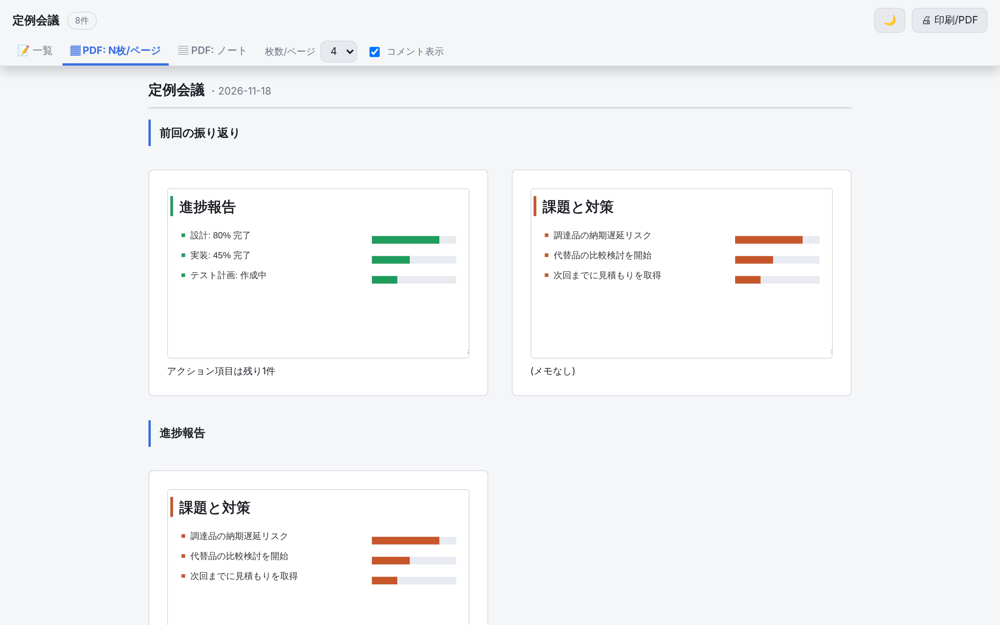
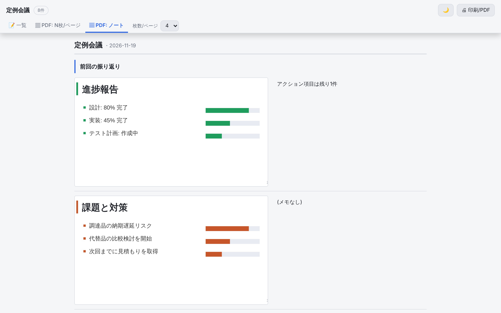
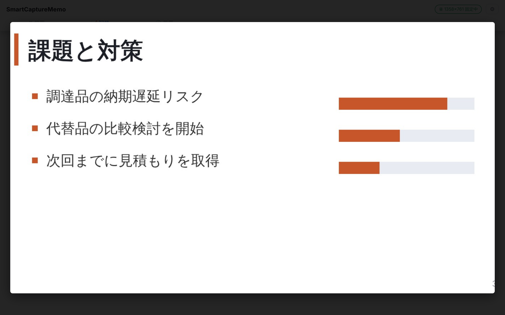
その他
ショートカット一覧
| キー | 動作 |
|---|---|
| Space | キャプチャ(入力欄の操作中を除く) |
| Ctrl+V | クリップボードの画像を貼り付け |
| Alt+↑/↓ | 前/次の見出しへ(記録タブ) |
| Shift+Alt+↑/↓ | 行の並び替え(⠿にフォーカス中) |
| Enter | 見出しの入力中: 次の見出しを作成(空なら終了) |
| Ctrl+Enter / Esc | メモ・見出しの入力を終えて、その行を選択した状態にする(Escは画面・メニューを閉じるときにも使用) |
| Enter(行を選択中) | その行のメモ・見出しの入力を始める |
| 矢印キー | 範囲の位置を微調整(範囲タブ、Shiftで大きく) |
データの保存場所
記録はすべてブラウザのIndexedDB(smart-capture-memo-db)にのみ保存され、どこにも送信されません。ページの更新やツールのバージョンアップでは消えませんが、ブラウザでサイトデータを消去すると失われるため、こまめに「HTML保存」で書き出しておくことをおすすめします。
対象ブラウザ
Edge / Chrome で動作します(画面共有・常時表示ウィンドウ・保存先フォルダの機能を使用)。https:// または localhost でのみ画面共有が使えます。
あとがき
本ツールは個人開発のWebツールで、Claude Code(AIコーディングアシスタント)を活用して作成されています。自由にご利用いただけますが、利用により生じたいかなる損害についても責任は負いかねます。